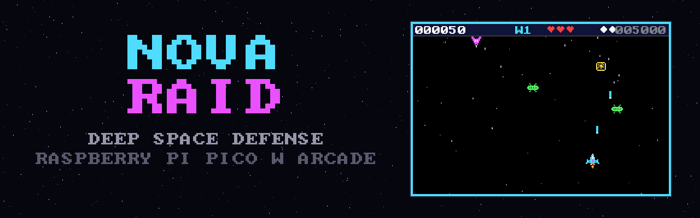
A complete retro arcade space shooter running bare-metal on the Raspberry Pi Pico W and the 52Pi Pico Breadboard Kit Plus — dual-core C renderer, analog joystick, buzzer soundtrack, WS2812 lighting, and high scores that survive the power switch.
Escalating waves, four enemy behaviours, power-ups, nova bombs, combo scoring — and the Void Dreadnought every fifth wave. Frames below are captured from the actual game code by the repository's host harness.
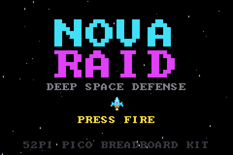
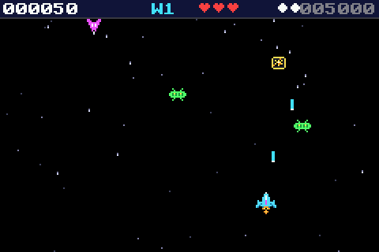
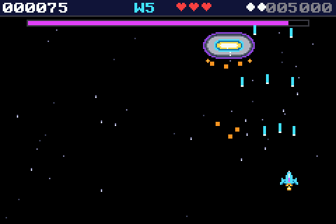
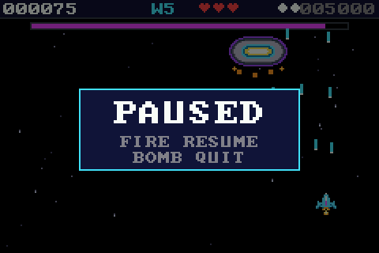
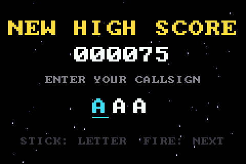
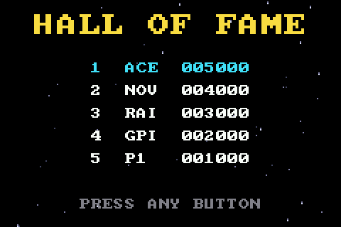
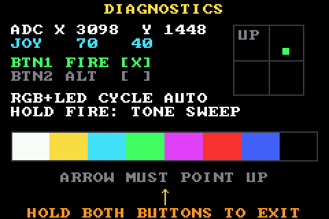
Owner-supplied photos of NOVA RAID running on the EP-0172 kit.
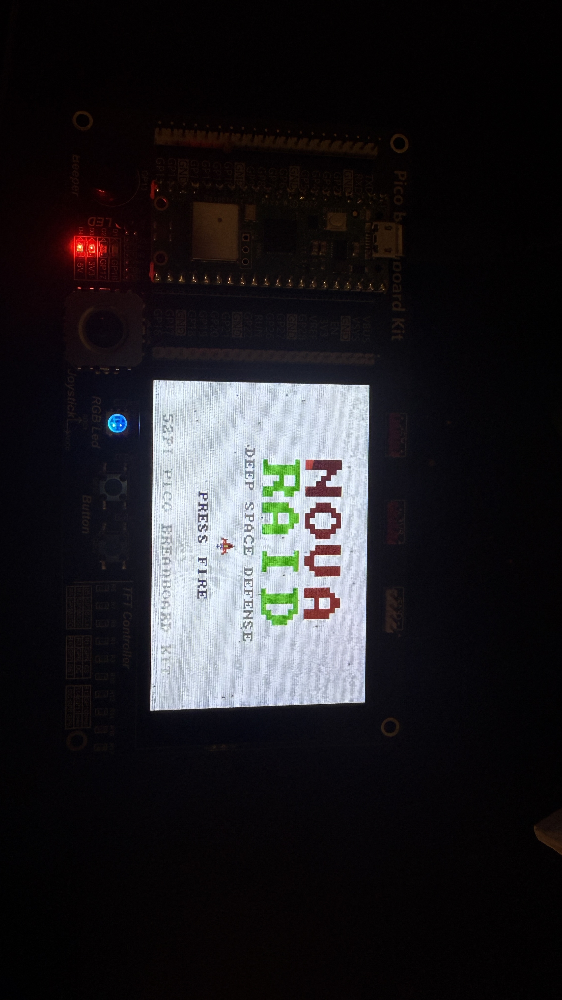
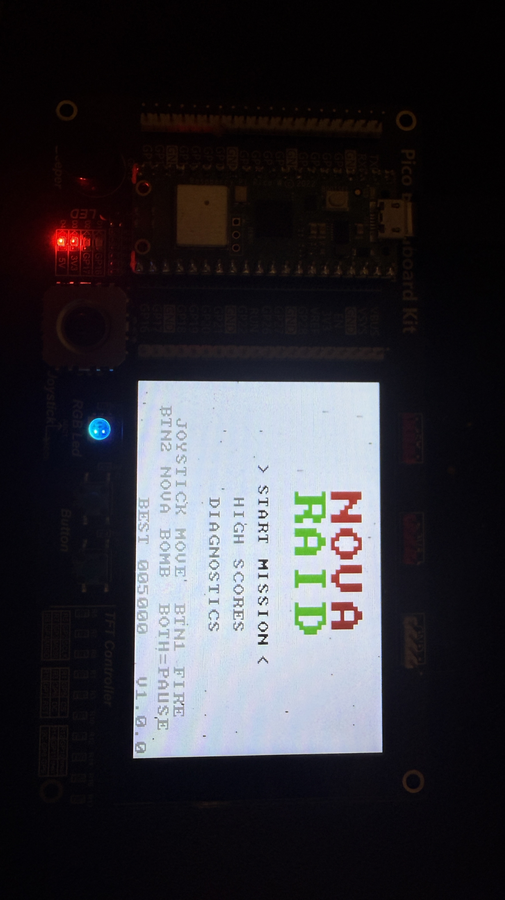
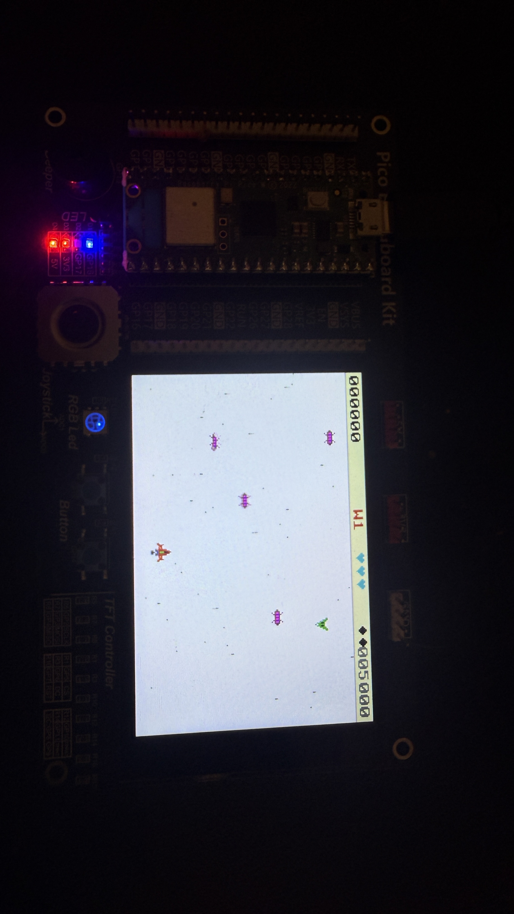
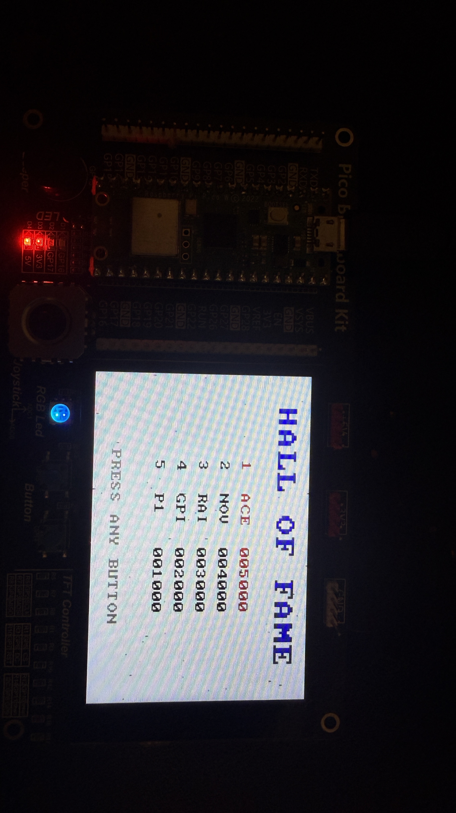
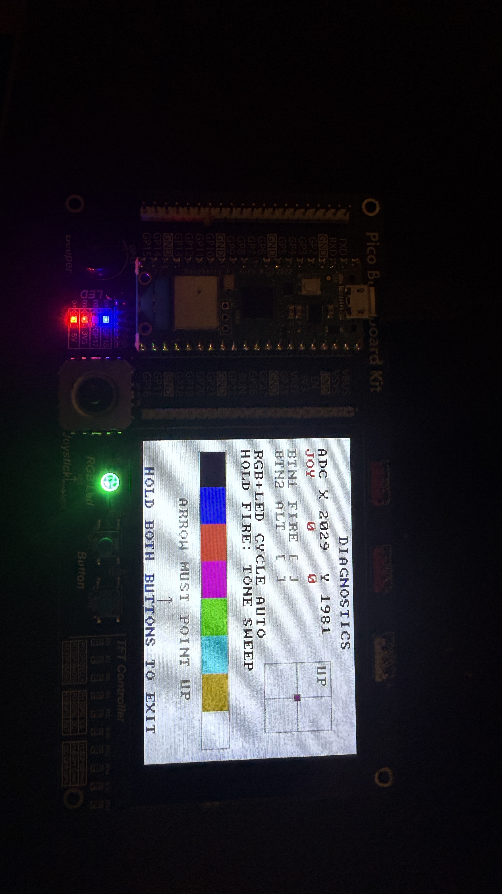
RP2040, 264 KiB of RAM, no GPU, no FPU — and a 480×320 panel behind a single SPI lane.
Core 0 simulates and renders a 240×160 framebuffer at a fixed timestep; core 1 pixel-doubles and streams it to the ST7796 with double-buffered DMA. The ~39 ms SPI transfer overlaps the next frame's simulation.
24.8 fixed-point positions and velocities, table-driven sine motion. Soft-float would blow the frame budget on a Cortex-M0+.
Top-5 scores in the last 4 KiB sector, written with the second core locked out and IRQs off, validated by magic number.
Gameplay code touches hardware only through a small HAL, so the identical sources build on a desktop for CI runs and pixel-true frame capture.
Priority-based single-channel buzzer sequencer; WS2812 base modes with transient event overlays; panel LEDs for bomb-ready and low health.
Pin map, logical schematic, block diagram, architecture notes, troubleshooting, and a diagnostics mode for hardware bring-up.
52Pi/GeeekPi Pico Breadboard Kit Plus (EP-0172) with a Raspberry Pi Pico W. No wiring — every peripheral is on the kit.
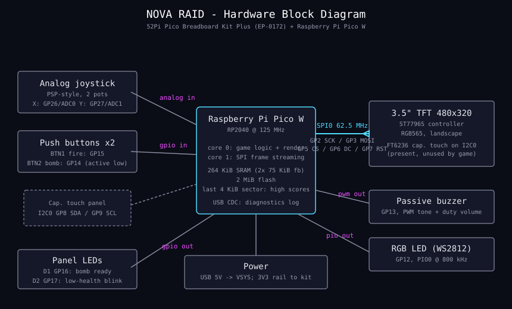
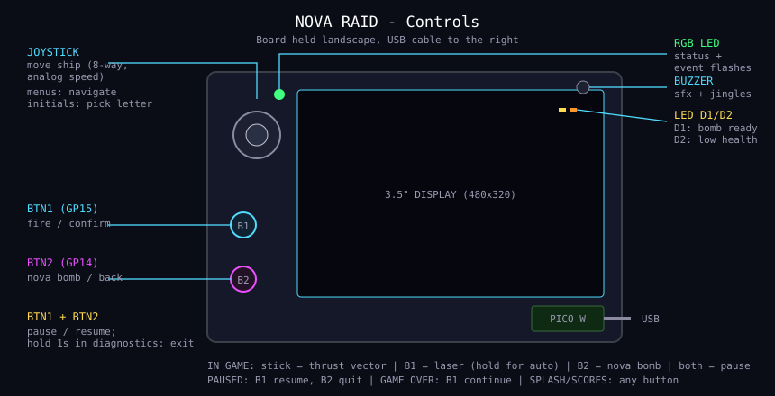
| Pins | Peripheral |
|---|---|
| GP2/3/4/5/6/7 | 3.5" TFT 480×320, ST7796S, SPI0 @ 62.5 MHz |
| GP26 / GP27 | Joystick X / Y (ADC) |
| GP15 / GP14 | Fire / Nova bomb buttons (active low) |
| GP13 | Piezo buzzer (PWM) |
| GP12 | WS2812 RGB LED (PIO) |
| GP16 / GP17 | Panel LEDs D1 / D2 |
Developed and validated against vendor documentation and the desktop harness;
not yet run on a physical EP-0172 by the author. Board-lot variations (rotation, joystick
orientation, display controller) are one-line settings in src/config.h, and the
built-in diagnostics screen shows exactly which to change.
nova_raid.uf2 from the latest release.BOOTSEL button while plugging in the USB cable — a drive named RPI-RP2 appears.Building from source, all three OSes: build & flash guide.